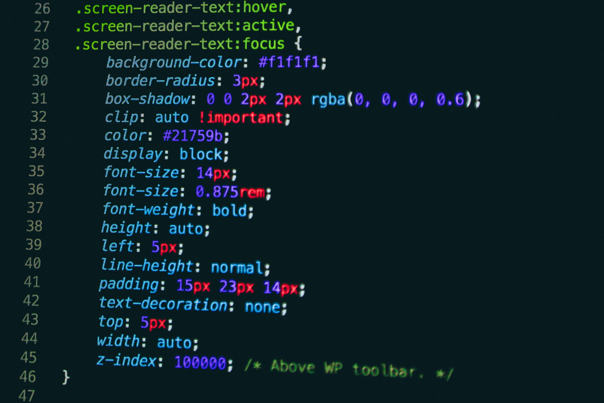

Comment creer un navbar avec Taiwind CSS
Une barre de navigation est un élément important d’un site web car elle facilite l’accès aux différentes pages. Avec Tailwind CSS, il est possible de créer rapidement une navbar responsive en utilisant des classes utilitaires pour organiser les éléments et gérer l’espacement .
"Il permet de mieux de preparer et d'etre un developpeur logiciel, on peut utiliser des classes utilitaires tel que flex p- m- et tant d'autres."
En savoir plus5 conseils pour débuter en développement web
Commencer en développement web peut sembler difficile, mais quelques bonnes pratiques aident à progresser rapidement. Voici 5 conseils essentiels pour les débutants afin d’apprendre les bases, pratiquer, explorer des frameworks et construire des compétences solides.
Pour débuter en programmation, choisis un langage simple comme Python ou JavaScript, comprends bien les bases au lieu de copier-coller, fais de petits projets concrets, utilise des ressources comme MDN ou VS Code, et pratique régulièrement pour progresser.
En savoir plus
Les bases de NODEJS
Node.js est une plateforme qui permet d’exécuter du JavaScript côté serveur. Apprendre ses bases consiste à comprendre la gestion des fichiers, la création de serveurs, l’utilisation de modules et la manipulation des requêtes/réponses. Ces connaissances permettent de créer des applications web dynamiques et interactives.
En savoir plus